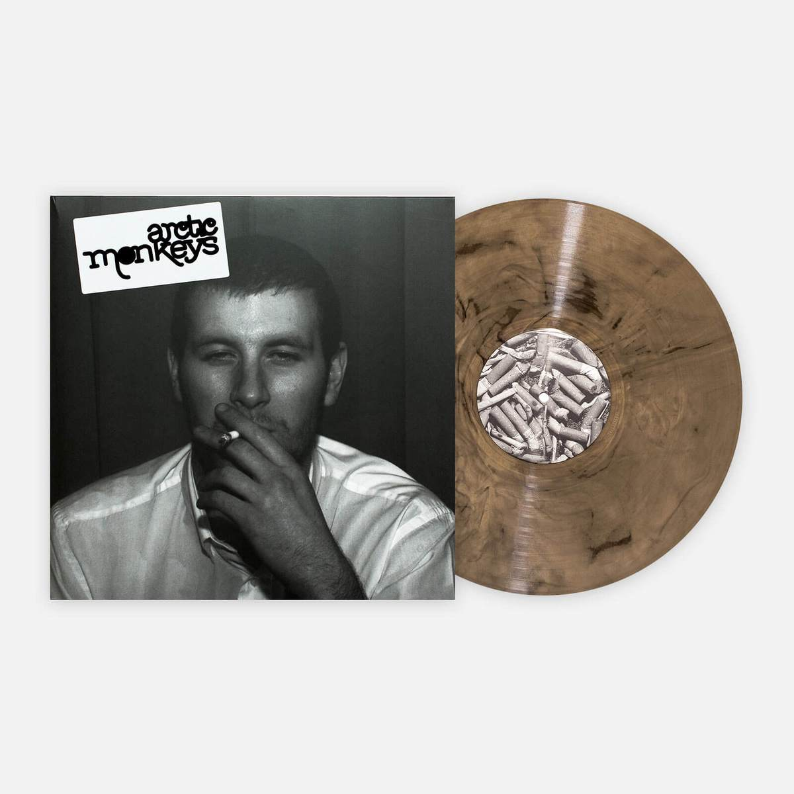
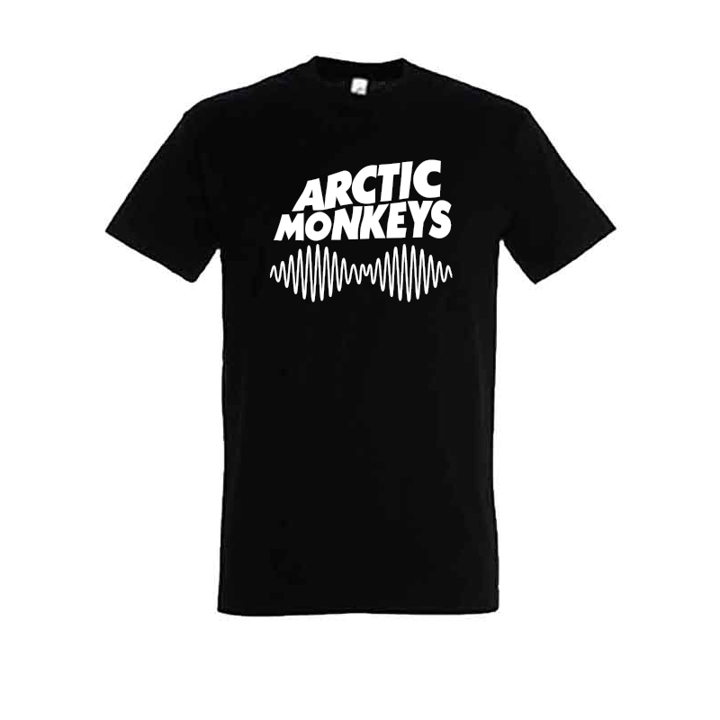
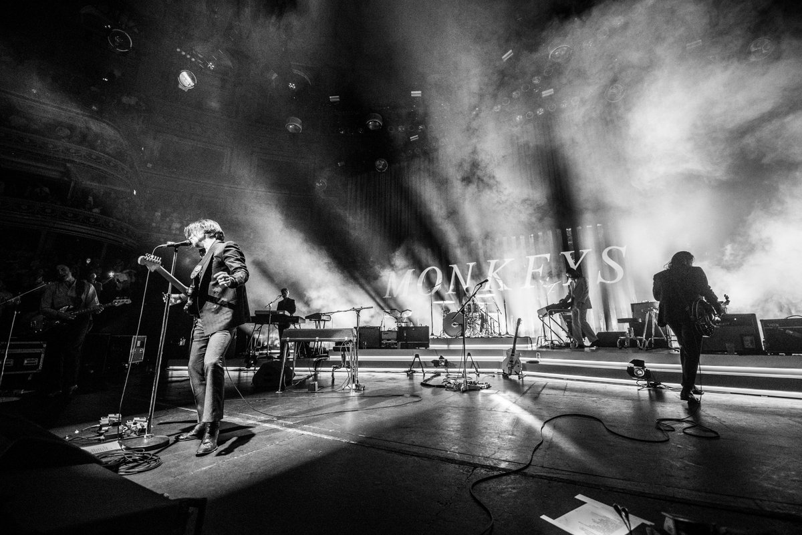

Home Page
Arctic Monkeys are an English rock band formed in Sheffield in 2002. The group consists of Alex Turner (lead vocals, guitar, keyboards), Jamie Cook (guitar, keyboards), Nick O'Malley (bass guitar, backing vocals), and Matt Helders (drums, backing vocals). Former band member Andy Nicholson (bass guitar, backing vocals) left the band in 2006 shortly after their debut album was released.
Arctic Monkeys were heralded as one of the first bands to come to public attention via the Internet, with commentators suggesting they represented the possibility of a change in the way in which new bands are promoted and marketed. [1] Their debut album, Whatever People Say I Am, That's What I'm Not (2006), became the fastest selling debut album in UK chart history, and has been hailed as one of the greatest debut albums.[2] It won Best British Album at the 2007 Brit Awards. The band's second album, Favourite Worst Nightmare (2007), was also acclaimed by critics and won Best British Album at the 2008 BRIT Awards. They went on to release Humbug (2009) and Suck It and See (2011).
Songs:
- Top #5 songs anytime Worlwide
- R U MINE?
- 505
- DO I WANNA KNOW
- BRIANSTORM
- CORNERSTONE

As of 2021, Arctic Monkeys has sold over 20 million records worldwide. In the United Kingdom, the band became the first independent-label band to debut at number one in the UK with their first six albums. The band have won seven Brit Awards; winning Best British Group and British Album of the Year three times; a Mercury Prize for Whatever People Say I Am, That's What I'm Not, an Ivor Novello Award, and 20 NME Awards. In addition, they have been nominated for five Grammy Awards,[4] and received Mercury Prize nominations in 2007, 2013, and 2018.[5] Both Whatever People Say I Am, That's What I'm Not and AM are included in NME's and different editions of Rolling Stone's 500 Greatest Albums of All Time lists.
Concerts: